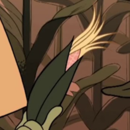

Discord Bots
I do a lot of stuff with Discord bots in my spare time using the discord.py library. Here are some of the more prominent ones I've created.

corn
prefix: c!
corn is one of the first Discord bots I've ever made, but it's still one of my favorites. The rules is simple:
- If a message has the word "corn" in it (must be in order, repeated letters are okay) with only punctuation/spaces separating the letters (e.g. "corn", "coooorn", "c-o/r.n", "epic or not"), then corn will respond with "hello corn".
- If a message has the word "corn" in it (must be in order) BUT there are other characters in between (e.g. "cool burning", "cars on raw noodles", but not "cars of New Jersey"), then corn reacts with the 🌽 emoji.
- If an image has corn in it, then corn will react with a corn emoji (this utilizes the Clarifai API, which isn't 100% accurate, but it's pretty good).
- Sometimes corn will give you... another response.
Some other commands you can give it:
c!cool_corn <caption>- generates a very cool picture with a given caption.c!link- gives the link to add corn to your server.
Add corn to your server here.